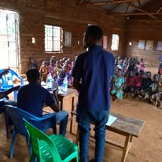
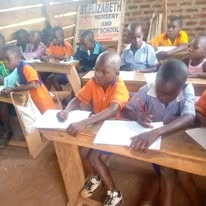
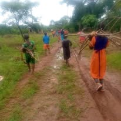
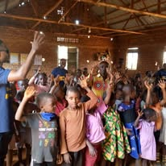
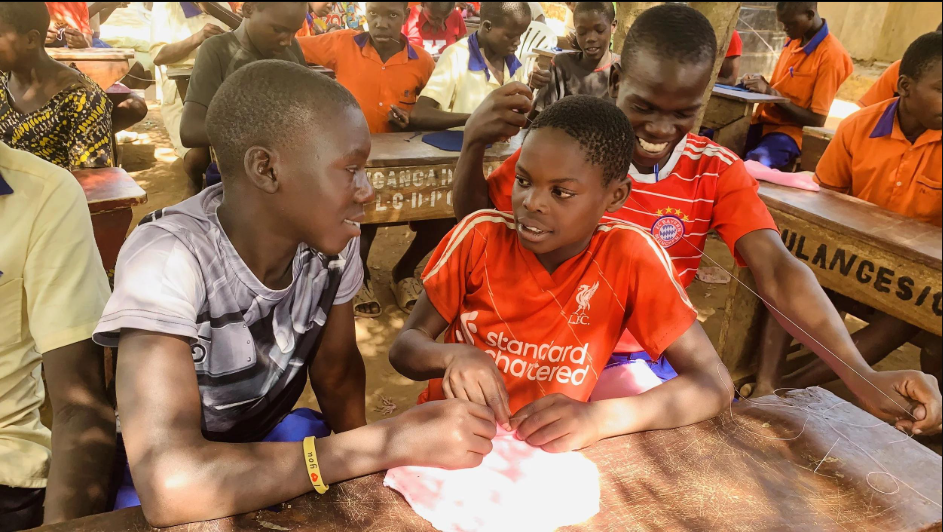

Mentorship & Life Skills
Encouraging children to learn, build confidence, develop positive relationships and grow with the skills they need for everyday life.
Helping Children Grow Beyond the Classroom
Children benefit from encouragement, guidance and opportunities to discover their abilities. Mentorship and life-skills activities can help them develop confidence, responsibility and positive relationships with others.
All God's Children Foundation seeks to create supportive opportunities for children in Kamengo to learn, participate, share ideas and build skills that contribute to their personal development.





Our Areas of Focus
- Encouraging reading, curiosity and a positive attitude towards learning.
- Building confidence, communication and self-expression.
- Promoting teamwork, cooperation and mutual respect.
- Developing problem-solving and responsible decision-making.
- Encouraging personal responsibility, respect and kindness.
- Providing positive guidance and encouragement for children's goals.
Creating Supportive Learning Opportunities
We value activities that allow children to participate, ask questions, learn from one another and practise useful skills. Where possible, we work with volunteers, families, schools and community members to create positive learning experiences.
Our Commitment
We aim to encourage children's development in ways that respect their dignity, individual abilities and wellbeing. Activities depend on available resources, community priorities and suitable partnerships.
Help Children Discover Their Potential
Are you interested in supporting children's learning, mentorship or life-skills development? We welcome volunteers, schools, organisations and partners to connect with us.
Contact Us